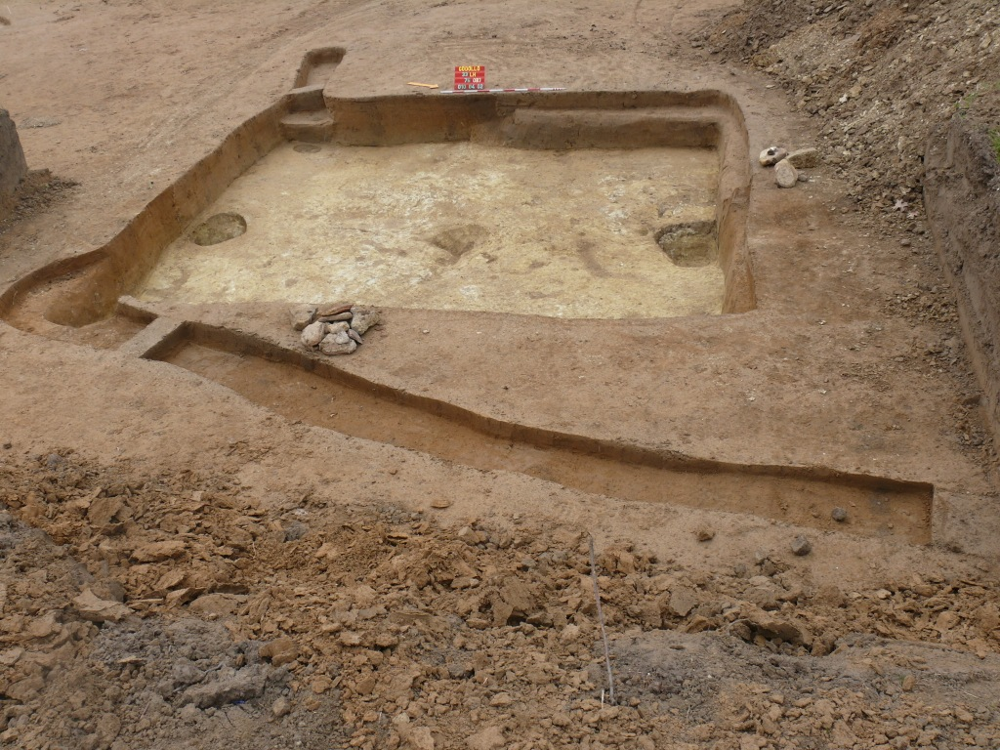
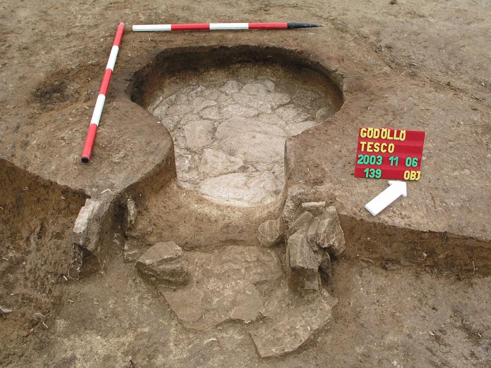
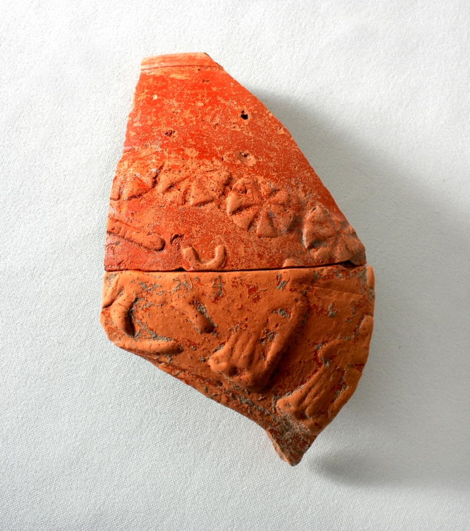
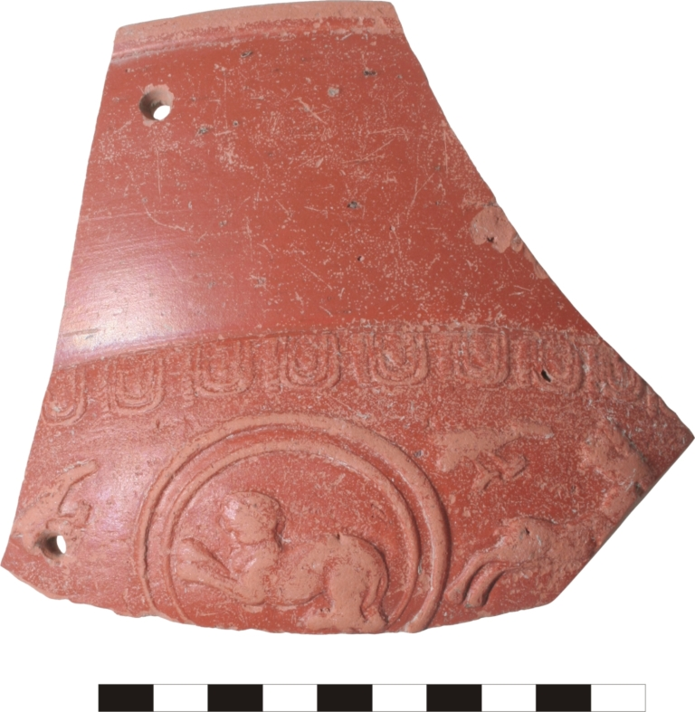
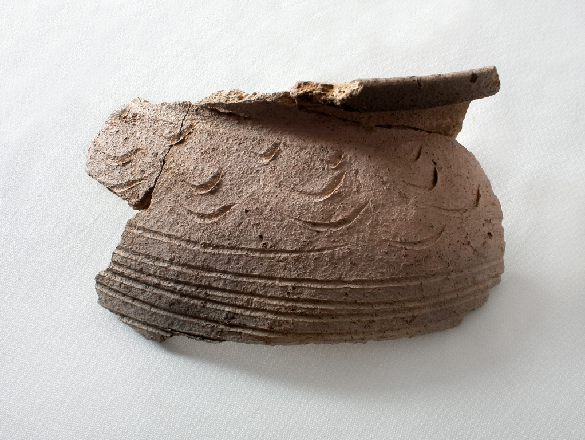
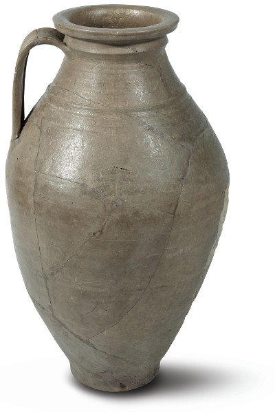

A szarmaták és kvádok, mintegy négy évszázadon át Pannonia szomszédai, hol szövetségesei, hol ellenfelei voltak. Valamikor a Kr.u. 1. század folyamán, nagyjából egyidőben azzal, hogy a Dunántúl területén a rómaiak megvetették Pannonia tartomány alapjait, az Alföldre egy újabb népcsoport, az iráni eredetű, szarmata jazigok vándoroltak be. Lovasnomád nép voltak, gazdálkodásuk alapja az állattartás. Négy évszázadon át laktak az Alföldön s a Tiszántúlon, miközben újabb csoportjaik pl. a roxolánok, érkeztek keletről. Lassanként áttértek a letelepült, paraszti életformára. A patakparti domboldalakon létesülő telepeik mérete a kisebb, 1-2 házból álló tanyáktól kezdve a nagy, 50-70 hektár kiterjedésű falvakig terjed. A 3. század közepétől szokatlanul sűrű településhálózat alakult ki az Alföldön, telepeik legfeljebb néhány kilométerre voltak egymástól. Az 5. század első felében ők is hun uralom alá kerültek.

Szarmata félig földbemélyített ház és árok

Szarmata sütő kemence (Kővári K. ásatása)
Szarmata a telep Gödöllőn, 2. század vége – 3/4. század forduló
Gödöllőn, a TESCO, a Stopshop és a Lidl áruház építését megelőző feltárásokon (Dózsa Gy. út – Thegze Lajos u. – Márki Sándor u.) az elmúlt években (2003–2011 között), egy nagykiterjedésű szarmata település látott napvilágot. Lakóházaik szabályos négyzet alakú, félig földbemélyített házak, szemközti oldalaknál a nyeregtetőt tartó cölöpök helyével. Körülöttük tároló vermek, szemétgödrök s szabadtéri sütő, ill. füstölő kemencék.
A falurészlet viszonylag jól keltezhető az itt talált jelentős számú terra sigillata (római luxusedény) töredék alapján.

Terra sigillata töredékek (2–3. század forduló, Rajna vidéki műhely)

Terra sigillata töredékek (2–3. század forduló, Rajna vidéki műhely)

Árpád-kori fazékperem
A 2. század végén – 3. század középén készült díszedények még jó néhány évtizeddel később is használatban lehettek. E sigillata töredékeket a szomszédos Pannonia provinciából hozták ide, a Dunán átvezető kereskedelmi utak egyikén. Nagy becsben tartották, ha eltört, összedrótozták és tovább használták, hiszen drága s nehezen pótolható áru volt.
A helyi fazekasok utánozták is ezeket a sigillatákat. Félgömb alakú mély tálakat s lapos tányérokat készítettek festett s szürke, simított kivitelben egyaránt. Importként kerültek ide a horpasztott falú poharak, az un. Faltenbecherek is.
Mellettük a mindennap használatos szürke házi kerámia tálak, korsók, fazekak és tárolóedények kerültek elő. Különösen kedveltek a simított felületű edények.

Késő római, simított korsó (Kővári K. ásatása)
Sok a kézzel formált fazék s bögre is. A háziipar kellékei, orsógombok, fenőkövek, kések is előfordultak a telep gödreiben. E szemétgödrökbe dobták az elfogyasztott állatok maradványait is. Ló, szarvasmarha csontok továbbá számos kutya csont, koponya s egyéb darabok kerültek napvilágra.
Telepeken ékszerek csak ritkán találhatók. A sírok mellékleteivel ellentétben egy telepásatáson csak az elvesztett, véletlenül elhagyott ékszerek, ruha kapcsolótűk, övcsatok maradnak ránk.
A kis óncsüngő s a nyakperec töredék a TESCO ásatása során, a vascsat és a fibulák a Lidl áruház feltárásakor bukkantak elő. A csatot az egyik földbemélyített ház lakói használták.
Római típusú térdfibula, alföldi típusú számszeríj fibula s a szarmaták által használt aláhajtott lábú fibula egyaránt szerepel köztük. A germán (kvád) viseletre jellemzőek az ívelt hátú
csontfésűk, melyből egy ép példány 2011. telén került elő a Lidl áruház építését megelőző feltáráson.
Ásatási jelentés
Gödöllő, Thegze Lajos utca (Pest m.) Sza, Á
I.ütem: A Pest Megyei Múzeumok Igazgatósága, Lidl áruház építését megelőző feltárást végzett Gödöllőn, a Thegze Lajos utcában (6270/22 és 6270/23 hrsz.) 2010. márciusában. A területen ismert régészeti lelőhely található: KÖH azonosító:26005, MRT13/3 (kézirat), Gödöllő-Háti dűlő 33. lh. A 2009. évben végzett próbaásatás során lehatároltuk a lelőhelyet. A mintegy 8976 m2-ből a megelőző feltárás során, a szerződés értelmében kevesebb, mint a felét, 3 357 m2 –t tárhattunk fel. Ennyi esett bele a mélyítéssel érintett területbe (épület alatt). A tervezett parkolók s bevezető utak alatt egy 2009. decemberi KÖH határozat értelmében nem áshattunk, pedig elfedésre kerül a lelőhely. A megelőző feltárás során előkerült 37 új objektum és a próbaásatás korábbi 45 objektumából most teljesen feltárhattunk még 10 objektumot. Van három árok, mely kifut a kijelölt ásatási területről, ezek félbemaradtak. Az objektumok szarmata kori gödrök, árkok, cölöplyukak és egy földbemélyített ház.
II. ütem: A tavasszal megkutatott terület keleti oldalán, a tervezett Lidl áruház területén, a Thegze Lajos utca – Márki Sándor u. kereszteződésében (6270/23 hrsz) 2010. július-augusztusában próba-, majd megelőző feltárást végeztünk.
Első lépésként kutatóárkokkal átvizsgáltuk a területet, mivel erre a részre már nem terjedt ki a Topográfia kötetben jelölt lelőhely. A kutatóárkokban előkerült 11 db régészeti objektum. A régészeti lelőhely lehatárolása megtörtént. A lelőhely nagysága az érintett területen 3570 m2, melyet összefüggő felületként feltártunk. A megelőző feltárás során 40 régészeti objektumot tártunk fel, a szarmata és Árpád-kor időszakából.
A 2009-2010. évi feltárások során összesen 125 objektum került elő. Kiderült, hogy a terepbejárás és a korábbi ásatások (TESCO 2003, Stop Shop 2007) alapján lehatárolt lelőhely keleti irányban még folytatódik. Az eddig regisztrált szarmata kori objektumokhoz most Árpád-kor árkok járultak.
A feltáráson részt vett Érdi Benedek geodéta, Mali Antal restaurátor.
2011-03-28.
dr Ottományi Katalin
ásatásvezető régész
Ásatási jelentés
Gödöllő, Ottó Ferenc u. (Pest m.) Sza, Á
A Pest Megyei Múzeumok Igazgatósága, Lidl áruház építéséhez kapcsolódó mentő feltárást végzett Gödöllőn, az Ottó Ferenc u. 2–4. sz. (Hrsz.: 6720/23) alatt, 2011. november–december hónapban. A lelőhely az MRT 13/3 kötetben, Gödöllő, Szíl–Háti-dűlő, 10/ 33. lh. néven szerepel. Előzmények: 2009. és 2010. években, a tervezett Lidl áruház területén megtörtént a próba és megelőző feltárás (az Ottó F. u. – Thegze Lajos utca – Márki S.u. között). A próbafeltárás kutatóárkaiban előkerült objektumok alapján a Múzeum lehatárolta a lelőhelyet, de csak az épület alatt végezhettünk teljes feltárást, és nem tárhattuk fel a tervezett parkolók s bevezető utak alatti részt, mivel azok, a Beruházó tervei szerint, elfedésre kerülnek. Erre a területre a KÖH megelőző feltárás helyett szakfelügyeletet írt elő.
Szakfelügyelet: 2011. november elején elkezdtük a régészeti szakfelügyeletet, a parkoló s bevezető utak területén. A humuszolás során előkerült, a korábbi próbafeltárás során dokumentált, de teljesen fel nem tárt objektumok egy része, továbbá olyan új régészeti jelenségek, melyeket eddig még nem regisztráltunk. A területet körbekerítettük s ezen a részen a kivitelezési munkálatokat leállítottuk. A szakfelügyelet keretén belül kinyestük és dokumentáltuk a régészeti objektumokat. Ám mennyiségük (kb. 60 db) szükségessé tette a mentőfeltárást. Az építtető ígéretei szerint elfedésre kerülő területen, a valóságban nemcsak a felső 30 cm-es humuszt szedték le, hanem jóval mélyebbre mentek, így számtalan régészeti objektum elpusztult, melyeket meg lehetett volna menteni, ha a megelőző feltárás erre a területre is kiterjedhetett volna.
Mentőfeltárás: A szakfelügyelet során körbejelölt objektum foltokat kibontottuk. A terület teljes nyesése következtében további gödrök kerültek elő. A feltárás keretén belül átvizsgáltunk 3800 m2-t, kibontottunk 73 régészeti objektumot, ebből 8 már a próbafeltárás során előkerült, de akkor csak a foltját rögzítettük. Sajnos van 27 olyan objektum is, melyet a próbafeltárás során dokumentáltunk, de most a humuszoláskor már mélyebbre szedtek a gépek s megsemmisültek. A feltárt objektumok többsége kerek gödör, általában öblösödő, mély tároló vermek ill. szemétgödrök. Az egyik gödör tetejére emberi csontvázat temettek. Vannak nagyobb, alaktalan, agyagnyerő gödörkomplexumok és egy, középen cölöplyukkal rendelkező, sátortetős építmény (műhely, vagy lakóház) is. Valamennyi szarmata kori. Nagyon sok kerámia, piros festett és szürke, korongolt edény, kézzel formált töredék került elő. Meglepően sok a római importként idekerülő terra sigillata edény töredék, koruk a 2. század vége–3. század közepe. Orsógombok, fenőkövek is előkerültek a gödrökből. Kiemelkedő lelet két db bronz fibula (térdfibula és aláhajtott lábú fibula), szarmata gyöngyök és egy germán jellegű, ívelt hátú csontfésű.
A derékszögben futó árokrendszerből is kevés, szarmata kerámia került elő, bár a hasonló árkok, az előző évi ásatás során Árpád-korinak bizonyultak. Idén csak szórvány Árpád-kori kerámiát találtunk, objektumokat nem tudtunk e periódushoz kapcsolni.
A feltáráson részt vett Érdi Benedek geodéta, Mali Antal restaurátor.
Szentendre, 2012.12.04.
dr. Ottományi Katalin
Ásatásvezető régész
ÖSSZESÍTES
Gödöllőn, a Lidl áruház építését megelőzően, a Thegze Lajos utca–Márki S.u. – Ottó Ferenc utca közötti területeken 2009. tavasza –2011. decembere között több régészeti ásatást is folytatott a Pest Megyei Múzeumok Igazgatósága (próbafeltárás, megelőző feltárás és leletmentés). Feltártunk kb. 10,727 m2-t, vagyis kicsivel, több mint 1 hektárt. A feltárás során előkerült összesen 198 régészeti objektum. Többsége szarmata kori. Az Árpád-korhoz csak néhány árok köthető.
Gödör: 163 db, egyikben emberi csontváz
agyagnyerő gödörkomplexum: 6 db
Cölöplyuk: 5 db
kemence/tűzhely: 3 db (egyik füstölő, másikat meg cölöpök veszik körül).
Félig földbemélyített lakóház: 4 db
Félig földbemélyített kis műhely: 5 db
árok: 11 db – ezek valószínűleg Árpád-koriak, de leletanyag csak kevésben van.
{kind=link}
{kind=link}
{kind=link}
{kind=link}
{kind=link}
{kind=link}
{kind=link}
{kind=link}
{kind=link}